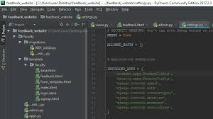

Além disso, Python suporta múltiplos paradigmas de programação. A programação procedimental pode ser usada para programas simples e rápidos, mas estruturas de dados complexas, como tuplas, listas e dicionários, estão disponíveis para facilitar o desenvolvimento de algoritmos complexos. Grandes projetos podem ser feitos usando técnicas de orientação a objetos, que é completamente suportada em Python (inclusive sobrecarga de operadores e herança múltipla). Um suporte modesto para programação funcional existe, o que torna a linguagem extremamente expressiva: é fácil fazer muita coisa com poucas linhas de comando. E também possui inúmeras capacidades de meta-programação: técnicas simples para alterar o comportamento de comportamentos da linguagem, permitindo a criação de linguagens de domínio específico.